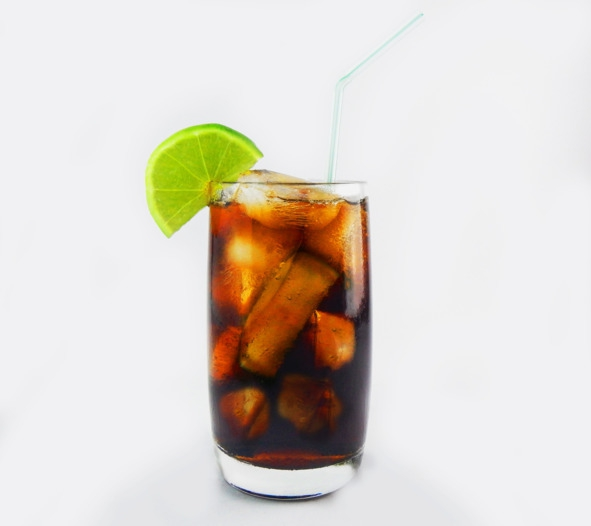

О культуре пития .. Популярные коктейли с ромом..


Mojito («Мохито»)
С испанского слово mojito переводится как «немного влажный». Напиток появился в 1942 году в гаванском баре La Bodeguita del Medio, теперь это один из самых узнаваемых коктейлей в мире.
Состав:
– белый ром – 30 мл;
– содовая (или «Спрайт») – 60 мл;
– сахар (желательно тростниковый) – 1 столовая ложка;
– свежая мята – 5—6 листиков;
– лайм (в крайнем случае лимон) – 1 штука;
– кубики льда – 100 г.
Рецепт: разрезать лайм пополам и руками выдавить в бокал сок одной половинки. Добавить сахар. Мелко нарезать мяту и сложить в бокал с соком лайма. Измельченные листики истолочь деревянной колотушкой или обычной ложкой. Для красоты можно добавить еще несколько целых листиков мяты. Доверху наполнить бокал кубиками льда. Добавить ром, оставшееся в стакане пространство заполнить содовой или «Спрайтом». Пить через трубочку.
Pina Colada («Пина Колада»)
По одной версии классический рецепт «Пина Колады» придумал в 1954 году бармен Рамон Марерро, работавший на Карибских островах. По другой – «Пина Колада» впервые появился в Пуэрто-Рико, а создание рецепта спонсировало министерство сельского хозяйства острова. Чтобы закрепить право на авторство напитка, в 1978 году правительство объявило коктейль «Пина Колада» национальной гордостью Пуэрто-Рико.
Состав:
– светлый (белый) ром – 30 мл;
– ананасовый сок – 90 мл;
– кокосовое молоко (или ликер «Малибу») – 30 мл;
– лед в кубиках – 50 г;
– сливки (11—15% жирности) – 20 мл (необязательно);
– ломтик ананаса или коктейльная вишенка – 1 штука.
Рецепт: все ингредиенты (кроме вишенки и ломтика ананаса) взбить в блендере до однородного состояния. Полученную смесь перелить в высокий бокал. Украсить коктейль вишенкой, долькой ананаса или взбитыми сливками. Подавать вместе с трубочкой.
Cuba libre («Куба либре») – ром-кола
Коктейль Cuba libre (в переводе с испанского «свободная Куба») впервые приготовили в одном из баров Гаваны в 1900 году. За два года до этого кубинцы победили в войне с Испанией, получив независимость от метрополии. На их стороне воевали американские солдаты. Одним из этих военнослужащих был капитан Рассел, любивший смешивать ром, колу и сок лайма. Однажды он узнал, что у его любимого коктейля нет названия. Тогда Рассел воскликнул «?Por Cuba libre!» («За свободную Кубу!»). Так самый популярный тост кубинского побережья стал названием коктейля. В составе «Куба Либре» хорошо сочетаются кубинский ром и американская кола.
Состав:
– ром – 50 мл;
– кола – 100 мл;
– лайм – 1 четвертинка;
– лед в кубиках – 200 г.
Рецепт: наполнить высокий бокал (хайбол) кубиками льда. Выжать в бокал сок из четверти лайма. Налить ром и колу. Аккуратно перемешать ложечкой (появится пена). Украсить одним-двумя кусочками лайма. Подавать вместе с трубочкой.

Коктейль «Куба Либре», он же ром-кола
Planter’s Punch («Пунш Плантатора»)
Первые рецепты пуншей появились примерно в XV веке в Индии. С хинди слово panch переводится как «пять», поскольку в те времена это был горячий напиток из пяти составляющих: рома (вина или бренди), сахара, лимонного сока, листового чая и горячей воды. Благодаря морякам британской Ост-Индской компании пунш в начале XVII века попал в Англию, а потом распространился по всей Европе и перекочевал через Атлантику в США. Со временем рецепт видоизменился, теперь вместо горячего чая в пуншах используются холодные фруктовые соки, что значительно улучшает вкус.
Состав:
– темный ром – 45 мл;
– апельсиновый сок – 35 мл;
– ананасовый сок – 35 мл;
– лимонный сок – 20 мл;
– сахарный сироп – 10 мл;
– гранатовый сироп «Гренадин» – 10 мл;
– биттер «Ангостура» – 4—6 капель (необязательно).
Рецепт: высокий бокал наполнить кубиками льда. Смешать в шейкере со льдом ром, соки, гренадин и сахарный сироп. Удалить из бокала талую воду. Перелить смесь из шейкера через барное ситечко (стрейнер) в бокал. Сверху добавить мелкий колотый лед и «Ангостуру». Украсить готовый коктейль долькой апельсина или ананаса. Пить через трубочку.
Hot orange («Горячий апельсин»)
Один из немногих коктейлей с ромом, которые подают горячими.
Состав:
– белый ром – 50 мл;
– апельсиновый сок – 100 мл;
– клубничный сироп – 30 мл;
– клубника – 5 ягод.
Рецепт: взбить в блендере клубнику с сиропом. Смесь перелить в металлический чайник, добавить ром и апельсиновый сок. Не доводя до кипения нагреть, постоянно помешивая. Перелить коктейль в бокал или чашку. Украсить порезанной клубникой.